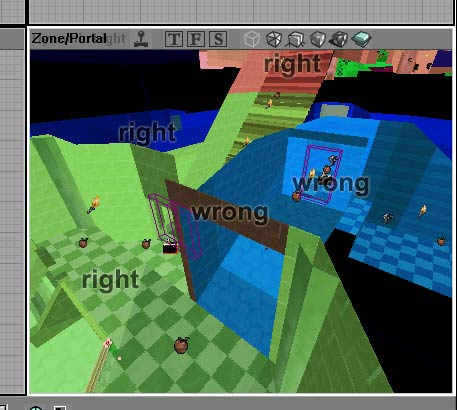

Zone
Im Unreal Engine terminology, a zone is a distinct portion of a map. You can imagine zones as being "airtight" areas, separated by brushes or zone portals. Zone portals are invisible, non solid sheet brushes (usually) that just define the edge of a zone.
In UT2003 and newer versions of the engine, zones are used for Map Optimization. Basically, the rendering engine determines which zones the player can't see from her current location, and ignores them. This keeps polycount down.
In older versions, such as UT, zones can be used to set certain conditions:
- Take DM-Morpheus as an example, inside the towers has been zoned off from the rest of the level, and the gravity set to normal. Outside is another zone, which is set to low gravity.
- Zones can also be used to define the surfaces of items like water, lava, and slime.
- However, in Unreal Tournament 2003, Volumes have largely replaced zones for this sort of effect.
A complex map can be split into several zones to improve performance.
- Two completely unconnected areas (say two subtracted rooms connected with a teleport) are automatically different zones.
- There is a limit of 63 zones per map. If more than 63 exist, the geometry builder will randomly merge zones together until they are within the limit. This merging will result in a performance penalty. This is especially the case now in Unreal Tournament 2003 as there is no BSP visibility culling, so for the engine it is as if you could see into those randomly selected zones.
You can zone in an open area of your map by making zone portal that overlap at all sides so that you can make an area a pain zone or whatever you want.
Zone Troubleshooting
Problems with zones? Check the list & post questions below.
List of problems & things to check here.
- Zones don't behave correctly:
- check Zone/Portal view (see UnrealEd Viewport to see if the zones are truly distinct
- check the ZoneInfo actor is within the zone
Zone leak: a new subtract brush beside an existing zone portal will cancel its effect. Select the portal brush & do brush context menu → Order → To Last
BSP holes or odd concave interleaved zones can cause the zoner to misbehave and incorrectly assign bsp nodes to zones. If an area where two zones meet is behaving oddly, check for this. In the example below from UnrealEd 2, the zoner has partially ignored a zone portal in a doorway, causing bsp nodes on the one side of the doorway to be assigned to the zone on the other side. It then assigned two nodes where the incorrectly and correctly zoned nodes meet to zone 0 (the magic invisible "nowhere" zone).

Example of a zoning error. |
Tarquin:What does this picture represent?
inio: A zoning error. Originally it was just a link, but Pingz suggested I put the picture up here after my server had a little down-time. The server is back up and I could take the picture out now. I've rearranged this section a bit to make it more clear.
Tarquin: I can see that the brown bit should be green. But why is the light blue zone wrong? I'm baffled, and I know all about zones, so I doubt newbies get much from it. It needs a fair amount of commentary.
inio: The near part of the light blue is wrong. The zone portal is in the doorway (which has light blue on both sides).
inio: I just tested and the actual limit is 63 zones, at least for UT 2003.
Tarquin: wasn't that the limit for UT? I thought they were raising it for 2003.
inio: That's what I remember hearing too. However, I tested (made a map with an 8x8 grid of subtracted boxes) and it maxed out at 63 zones.
Pingz: The [this example] link is broken... someone have a picture to upload to the wiki insted?
inio: Not sure but there's something funky with the DNS updates I did a few days ago. I've ULed the pic and linked it. I temporarily re-mapped the server to the IPs it used to be at, and fixed the link for some file moves I did.
Poggel: I have a problem with bots and zones. If i change the zone velocity, bots dont react with it. While i get pulled into a fan, they just stand around acting like nothing is happening...
Graphik: Ask on Help Desk. 
Darkmistx: How do I make a 3d zone?
Foxpaw: Meaning what exactly? All zones are 3D, so I'm not sure I understand your question.
Darkmistx: I mean is it only possible to make flat 2d zone portals or can I turn a 3d box into a zone portal.
Tarquin: yes, a cube brush can be added to the world as a ZP. You'll get a zone inside it.
MythOpus: Ahem, Subtract Tarquin, Subtract the 3D Box 
Ch3z:<–No0BisHly I still don't get that picture, and i thought you only had to have portals partitioning off the zone from any place that it opens to areas of the map that you don't want to include in that zone. ie. covering doorways, windows, open ceilings, etc. Says here you have to put "...zone portal that overlap at all sides...". That's not correct is it?
Tarquin: That's if you want to make a zone that doesn't correspond to a room. Eg a pain zone next to a big spike.

![[this example]](http://www.inio.org/~inio/mario%20stuff/badzone.jpg?link){kind=link}